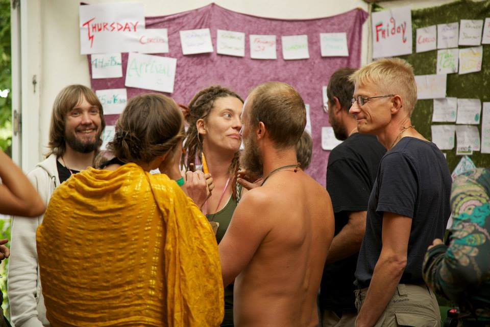
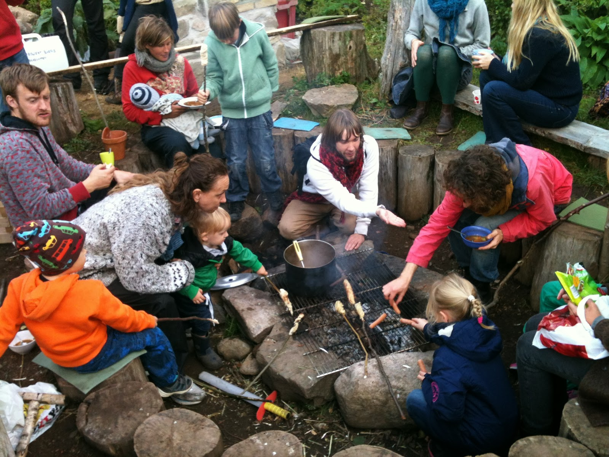
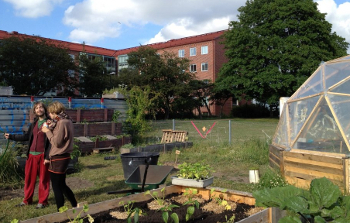

Bookings from around the world - Hans' story, the first to book their place at IPCUK
Bookings for the International Permaculture Convergence (IPC), London 2015, have been open for a week, with people from more than a dozen countries booked so far. The first person to reserve their place was Hans Ryding from Sweden.
Hans lives in the coastal area of Skåne, the southernmost part of Sweden, where his design work is focused.
Hans works in consultation and design for private and community gardens, for buildings and living, mostly energy (heating) and interior layouts including growing food indoors.
Hans is also experienced in running a number of organisations in his native Sweden, including 'Mykorrhiza', a local version of 'reclaim the fields', and is actively involved with both his local Permaculture group (Permakultur i Skåne) and the national association (Permakultur i Sverige).
International connections – positive yields and community
Most permaculture enthusiasts seriously consider the effect their actions have on the planet and Hans is a great example:
"I have virtually a zero carbon footprint," he says, "most of my food is home-grown, or from projects I design for, and some dumpster-diving."
As someone who is serious about emissions, Hans says he rarely travels: a trip to Britain for the UK permaculture convergence 2014 was the first time he'd been out of Sweden and Denmark in five years. The information he gathered at last year's UKPC is being disseminated to others and to inform discussions about the Nordic diploma system.
This coming year, Hans is keen to take yields in a community sense. A grasp of how permaculture operates internationally is very much in his mind, and seeing how the communication and information streams are involved. National differences in experience and viewpoints interests Hans, taking account of these differences is something he feels he needs to design for, that it will “make it easier for us to reach one another.”
Hans feels "we have much to learn from each other, and support to give each other, especially across similar climates."
We need to design the world we want
Permaculture is a tool for making the world a better place, Hans says, quoting Buckminster Fuller’s “the best way to predict the future is to design it.”
A desire for an intentional life, coupled with a love of plants, a fascination with observation and small detail, and what he refers to as his “nerdy fascination with ecosystems”, informs much of what Hans does. His ‘dumpster-diving’ and principles of no-harm and non-violence are very much part of the picture as well.
“It’s one of the main things in my life that makes the world make sense,” Hans says, “and shows me that I can do something to make it better. And that means everything.”
Ask Hans about the challenges facing the planet and the best way to tackle them and he is clear that we need to intentionally design the life and future we need: “We need to create sustainable wholes, modelled on nature, that respect nature, humans and the limited resources of this planet.”
His approach to this huge challenge is clearly that of permaculture: combining varying elements based on the properties of the specific location and taking all of the needs, wants and preferences of these elements, and of course people, into account.
“See even more new possibilities”
“One discussion that will blow my mind all over again, and make me see even more new possibilities I never knew existed.” This kind of thing is rare, Hans admits, but the IPCUK is just the sort of occasion where it could happen.
Beyond that, Hans is also looking forward to making new contacts that may lead to a great new project. “And the food,” he adds, praising the work of OrganicLea and also the people who do the cooking.
And the best way to travel to London from Scandinavia? Hans mentions something being called the ‘permabus’. It is actually a regular Euroline service between Copenhagen and London, but if a number of people were all travelling together there could be a mini mobile convergence taking place.
Join Hans and other permaculture designers from around the world, at IPCUK
Hans Ryding is clearly looking forward to IPCUK. If you would like to meet Hans - and who knows, perhaps take part in that one special discussion that leads to a great project - then book your place now.
Article written by Permaculture Ambassador Michael Hutchinson. With thanks to Hans Ryding.